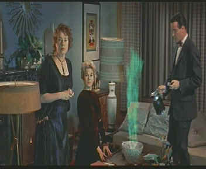

| Bell,
Book and Candle/B,,B+ |
| Columbia/1958/103m/ANA
1.85 |
A
light, comic soufflé , Bell, Book and Candle might at
first seem dated, but it's charm overcomes the binds of time to
provide a delightful romp through the recesses of a once and
innocent New York.
|
 |
|
A
witch's work is never done. ©Columbia |
James
Stewart plays Shep Henderson, a New York book publisher who
happens to live above beautiful blonde antique dealer Gillian
Holroyd, amply embodied by Kim Novak. Why the gorgeous
Gillian is pining for a man is beyond me, but she spots Shep one
wintry night and decides he's the man for her. And she's just
the girl to incant the right words. Gillian is a witch. There's
more magic behind those painted on eyebrows than meets the
script.
Aiding and abetting Gillian in her
light practices of the dark art are daffy aunt Queenie, who
lives in the same building, effervescent brother Nicky who bangs
a mean bongo drum and wants nothing more from his dark powers
than to extinguish lamp post lights with the snap of a finger,
and a purring feline named Pyewacket. Shep's obnoxious fiancée
plays perfect foil for Gillian's darker arts and writer Sidney
Redlitch completes the coven of actors convened by director
Richard Quine to create his spell of comedy.
Gillian initially uses her witch's
wiles to capture Shep's heart, but in the end it is her beauty
that must win out. Methinks some better writing could have
conjured a few more delicious uses for Gillian's magic,
but the inspiration of incanting writer Sidney Redlitch from the
beaches of Mexico to New York makes up for any other lack of
imaginative magic. Redlitch adds the unpredictable ingredient to
the comic brew that is otherwise a somewhat too pat.
Stewart seems equally at ease
charming co-star Kim Novak under the comic spell of Bell,
Book and Candle or through the San Francisco mists of Alfred
Hitchcock's Vertigo,
which also starred the same pair of actors in 1958. Novak looks
hauntingly beautiful through the glistening lens of
cinematographer James Wong Howe. Jack Lemmon gives a manic
performance as brother Nicky and Elsa Lanchester is perfectly at
home as Aunt Queenie. Ernie Kovacs makes the most out of Sidney
Redlitch.
Time and proper storage have been kind
to the film elements of Bell, Book and Candle. Or maybe a
witch's wand passed over the film spontaneously restoring its
youth. Whichever the case, movie lovers get the benefit of
beautiful velvet blacks, rich colors, and subtle textures that
all add to the pleasure of watching this thoroughly charming
comedy. Focus remains sharp throughout, and contrast provides
refreshing snap to the presentation. There aren't many wrinkles
in Kim Novak's formfitting black outfit, but that is not due to
any fault in the DVD transfer. Every detail on the film is
clearly replicated on the DVD. George Duning's easy to listen is
clean and dialogue is clear on Dolby Digital Mono soundtrack.
In addition to a theatrical trailer for Bell, Book and Candle,
the DVD contains trailers for Mr.
Smith Goes to Washington and The
Man from Laramie.
|
|

Selections from the feature archive
include articles on
Akira Kurosawa, Frank
Darabont, Blonde
Bimbos, Hollywood
Street Gangs, or Vietnam:
The Hollywood Pariah, and many more....

Catch the Hollywood take on
Blonde Bimbos by clicking on the image above.
  Nicebid.com
is a well organized auction site. Movie fans can browse
through the movie section for posters and star photos. Nicebid.com
is a well organized auction site. Movie fans can browse
through the movie section for posters and star photos.
 DVD
Gold DVD
Gold
specializes in Region 2 films, and spins gold about the latest
DVD releases in England and elsewhere. Check out the new site.
 Gary
Morris's insightful publication Bright Lights Film Journal
turns the celluloid in films from a unique perspective. Click on the image above for more pure movie views. Gary
Morris's insightful publication Bright Lights Film Journal
turns the celluloid in films from a unique perspective. Click on the image above for more pure movie views.
 Kinoeye
Archive Kinoeye
Archive
This
is a resource of all content-rich
materials on the web relating to Central
and East European cinema. The ultimate
aim of the Kinoeye Archive is to provide
a near-as-damn-it definitive index of
intelligent and thoughtful
English-language analysis of Central and
Eastern European cinema on the web.

The
Movie Poster Archive include extensive poster images from the
films of stars like Susan Hayward, Kirk Douglas, Katharine
Hepburn and many more. This month's featured star is James
Stewart
|